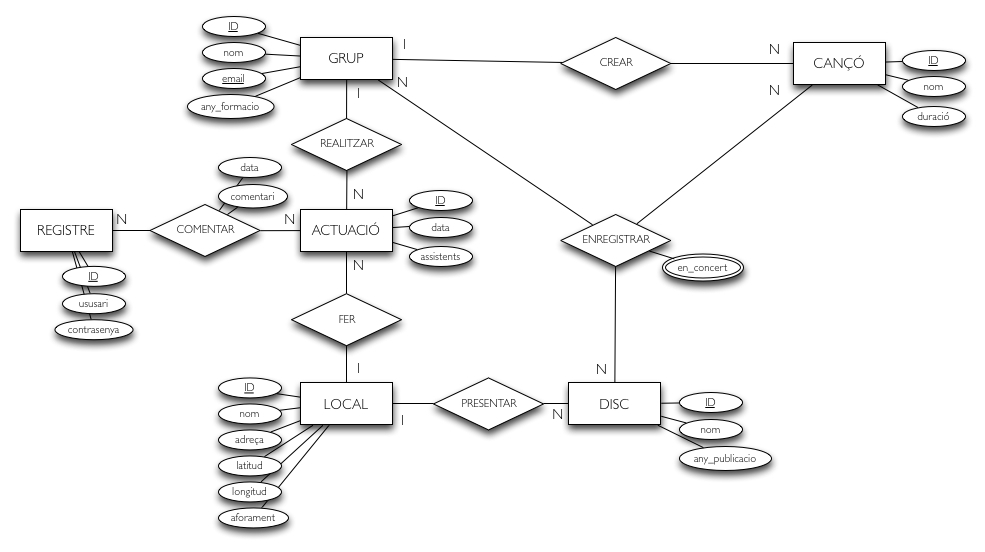

Discogràfica Mercè

Informació sobre el projecte
El projecte
Aquesta aplicació permet comentar i consultar altres comentaris d'actuacions de grups musicals en diferents locals de Barcelona.
Per poder utilitzar l'aplicació, l'usuari s'ha de identificar amb usuari i contrasenya. Una vegada validats, l'usuari seleccionarà un local dels que es mostren en el mapa.
A continuació, seleccionarà una actuació de la llista i escriurà el comentari sobre l'actuació en qüestió en el camp de text. En el moment que s'envia aquesta informació, l'usuari rebrà una confirmació i es mostraràn els comentaris realitzats per altres usuaris sobre l'actuació.
En totes les pàgines l'usuari té l'opció de cancelar la selecció o tornar a la pàgina anterior.
En la pàgina inicial, es mostra un icona que redirecciona l'usuari a la informació del projecte, pàgina actual.
Consulta la taula Registre, que trobaràs al final d'aquesta pàgina, per utilitzar els usuaris dins la base de dades, i per tant, poder iniciar la apliació.
La base de dades
El diagrama E-R de la base de dades
Explicació de les seves entitats, atributs i relacions.
S'ha incorporat el model ER amb 4 entitats i 3 relacions. Els músics pertnayen a diferents estils de música, i no són els únics dins de cada categoria, altres músics també hi poden pertànyer.
Els músics llancen al mercat discs, que aquests només poden ser produïts per un músic i en un estudi de gravació, tot i que en cada estudi es poden produir més d'un disc.
Taules al model relacional.
Grups
Discs
Cançons